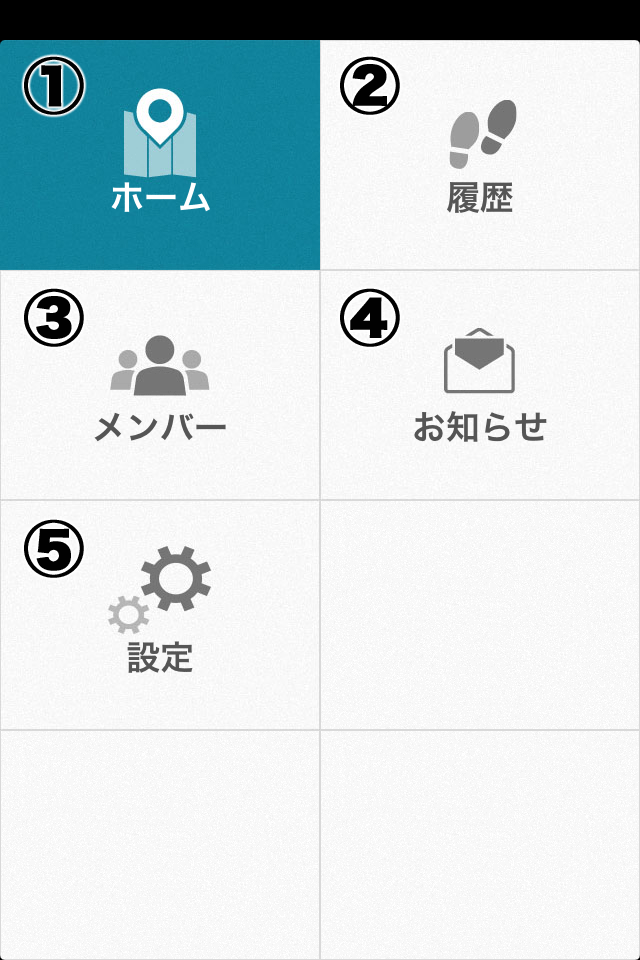

戻る
メニュー画面について
メニュー画面より、cyzenの各画面に移動することができます。

①ホーム画面
報告を行う画面に移動します。
②履歴画面
自分およびメンバーの報告履歴の閲覧を行う画面に移動します。
③メンバー画面
メンバーの現在の位置の閲覧を行う画面に移動します。
④お知らせ画面
サービス運営者からのメッセージを閲覧する画面に移動します。
⑤設定画面
アプリの動作に関連する各設定を行う画面に移動します。
戻る